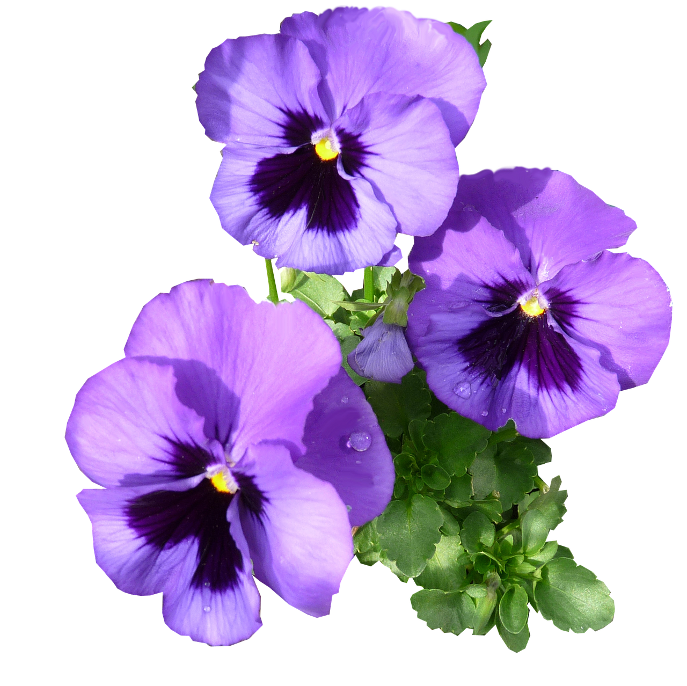

This is Section 2. It uses the bg-base-300 color from the Forest theme to create a subtle depth and separate the content from the hero area.
This is Section 3. By using bg-neutral, we get a stronger contrast that works great for closing the page or calling to action before the footer.